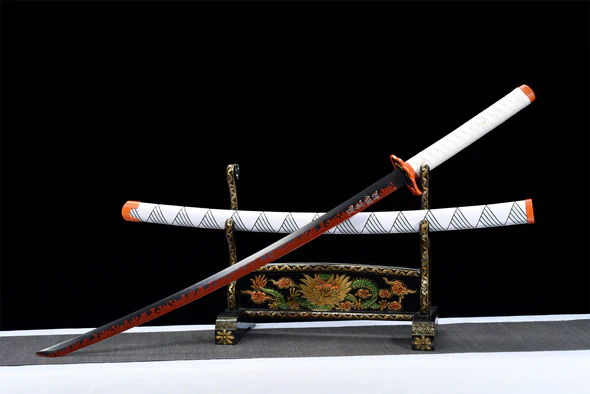

Le katana de Rengoku,le Pillier de la Flamme dans Demon slayer(en japonais Kimetsu no yaiba),il a une signifaction symbolique forte , meme s'il n'a pas une histoire individuelle détaillée comme drcertaines armes dans d'autres oeuvres
 Pour retrouver son katana appuyez sur ce lienIndice:Egalité